#4476 Ein Mann wie der Teufel
Alternativ: A Lawless Street
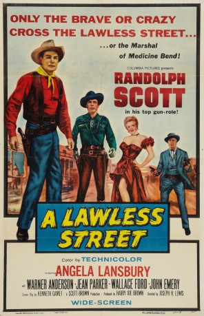 
 IMDB-Wertung: 6.4 / 10
IMDB-Wertung: 6.4 / 10  Metascore: 0
Metascore: 0 
The marshal of Medicine Bend is tired and alone. Tired of killing to keep himself from being killed; alone because of an unspoken past disappointment. The realisation that someone in town is paying to have him killed and the arrival with a show troupe of the special someone from the past coincide to force more than one type of showdown.
Jahr: 1955
Dauer: 74 Minuten
FSK: 12
Land: USA Studio: Columbia PicturesTonspuren:
Untertitel:
Auflösung: 720p (1280x720) Größe: 3174 MB
Genre: Western
Regisseur: Joseph H. Lewis
Drehbuch: Elizabeth Meriwether
Soundtrack:
Darsteller:
 Randolph Scott als Marshal Calem Ware
Randolph Scott als Marshal Calem Ware Angela Lansbury als Tally Dickenson
Angela Lansbury als Tally Dickenson- Warner Anderson als Hamer Thorne
- Jean Parker als Cora Dean
- 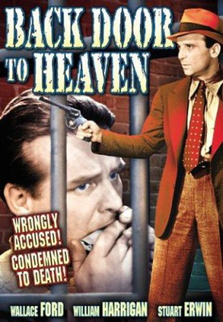 Wallace Ford als Dr. Amos Wynn
- John Emery als Cody Clark
- James Bell als Asaph Dean
- Ruth Donnelly als Molly Higgins
- 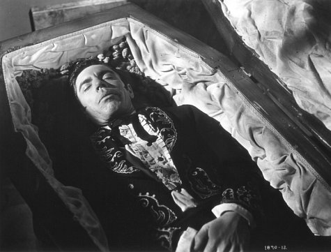 Michael Pate als Harley Baskam
- Don Megowan als Dooley Brion
 Jeanette Nolan als Mrs. Dingo Brion
Jeanette Nolan als Mrs. Dingo Brion- 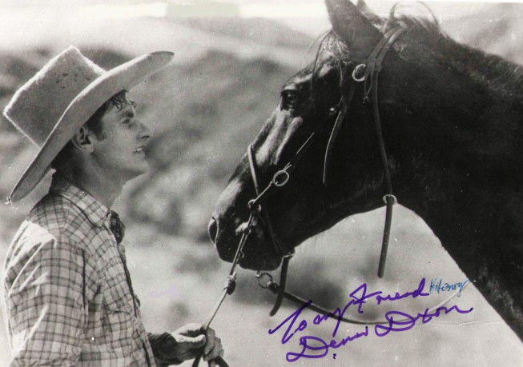 Victor Adamson als Saloon Waiter , uncredited
- 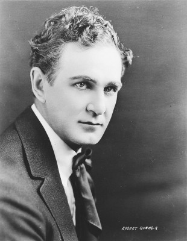 Bob Burns als Townsman , uncredited
- John L. Cason als Dean Ranch Hand , uncredited
- G. Pat Collins als Gambler , uncredited
- 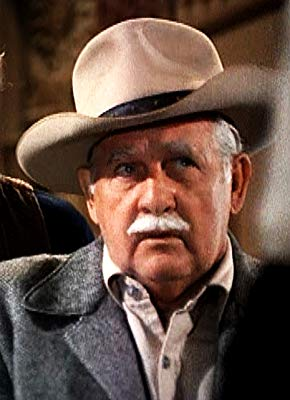 George DeNormand als Barfly , uncredited
 Richard Farnsworth als Townsman , uncredited
Richard Farnsworth als Townsman , uncredited Franklyn Farnum als Townsman , uncredited
Franklyn Farnum als Townsman , uncredited- 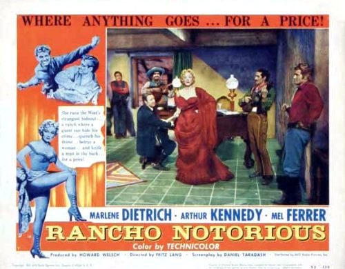 Frank Ferguson als Abe Deland , uncredited
- 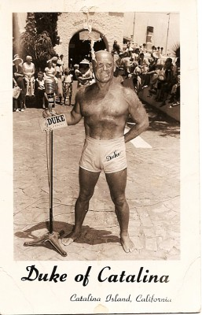 Duke Fishman als Townsman , uncredited
 Frank Hagney als Dingo Brion , uncredited
Frank Hagney als Dingo Brion , uncredited Reed Howes als Townsman , uncredited
Reed Howes als Townsman , uncredited Jack Kenny als Townsman , uncredited
Jack Kenny als Townsman , uncredited Ethan Laidlaw als Barfly , uncredited
Ethan Laidlaw als Barfly , uncredited Kermit Maynard als Townsman at Stage Coach , uncredited
Kermit Maynard als Townsman at Stage Coach , uncredited Philo McCullough als Townsman , uncredited
Philo McCullough als Townsman , uncredited Frank Mills als Fight Spectator , uncredited
Frank Mills als Fight Spectator , uncredited Frank O'Connor als Townsman in Front Row , uncredited
Frank O'Connor als Townsman in Front Row , uncredited Jack Perrin als Townsman , uncredited
Jack Perrin als Townsman , uncredited- Guy Teague als Townsman , uncredited
 Jack Tornek als Townsman , uncredited
Jack Tornek als Townsman , uncredited- 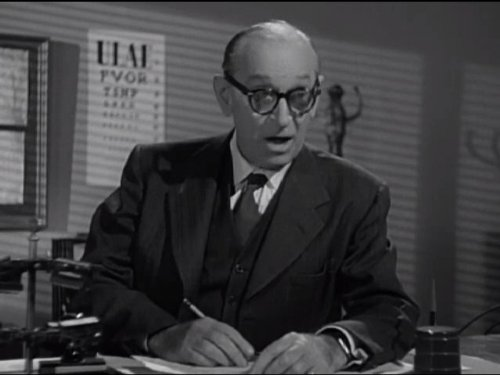 Harry Tyler als Tony Cabillo - Barber , uncredited
- Harry Antrim als Mayor Kent , uncredited
- 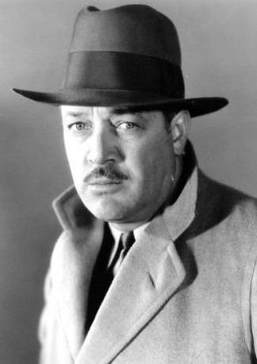 Stanley Blystone als Rancher , uncredited
- Rudy Bowman als Townsman , uncredited
- Barry Brooks als Minor Role , uncredited
- 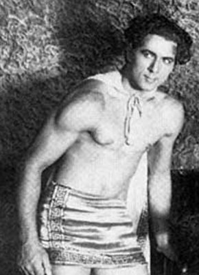 George Bruggeman als Townsman , uncredited
- Don Carlos als Juan Tobrez , uncredited
- Edwin Chandler als Minor Role , uncredited
- Hal K. Dawson als Hotel Clerk , uncredited
- Leonard P. Geer als Townsman , uncredited
- Augie Gomez als Townsman , uncredited
- Sam Harris als Spectator in Opera Box , uncredited
- Mike Lally als Townsman , uncredited
- Jay Lawrence als Townsman , uncredited
 Artie Ortego als Townsman , uncredited
Artie Ortego als Townsman , uncredited- Peter Ortiz als Hiram Hayes , uncredited
- Jack Parker als Townsman , uncredited
- Frank J. Scannell als Bartender , uncredited
- Jerry Schumacher als Barfly , uncredited
Datei: X:\HD-Western-1900-1959\Mann wie der Teufel, Ein (1955, FSK12, 1280x720).mkv seit 26.09.2016
Festplatte: HD Eastern+Western
 Es gibt insgesamt 98 Filme in der Gruppe 'HD-Western-1900-1959'
Es gibt insgesamt 98 Filme in der Gruppe 'HD-Western-1900-1959'